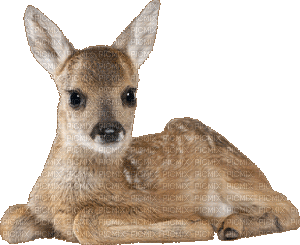
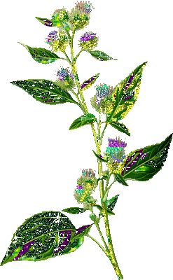
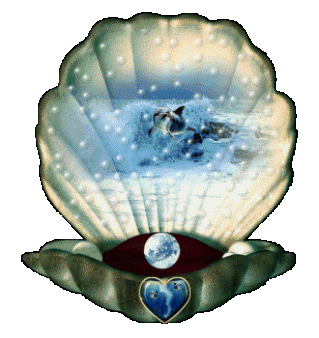
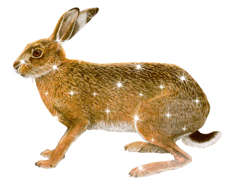
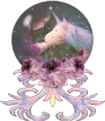
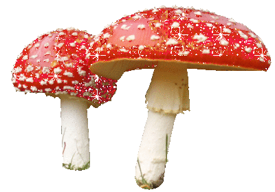
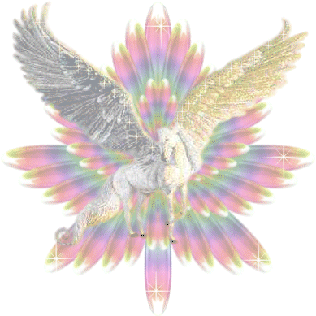
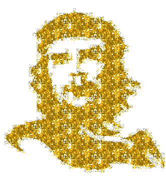
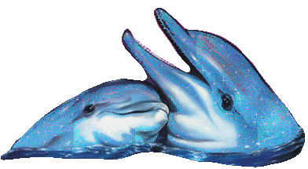
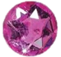

resources
Here are some audiovisual ressources I use to expand my knowledge, education and taste (: To be completed.
SORRY FOR NON-FRENCH SPEAKERS, ALMOST EVERYTHING IS IN FRENCH (but you can watch yt videos with subtitles)
non-commercial radio stations 
- l'eko des garrigues - nice music and podcasts
- radio zinzine - nice music and podcasts
- radio siamsa - traditional irish music
- radio pulsar - nice music and podcasts
- le djam radio - nice music
free books 
- The anarchist library
- La bibliothèque anarchiste
- Archives internet marxistes
- z-library - everything possible in pdf
- infokiosques - brochures
some yt channels I recommend 
(

:my favourites)- Feminism
- Agrafe - materialist feminism
- Fashion Quiche - philosophy, feminism, fashion, pop culture
- Game of Hearth - ecofeminism, queer, political ecology
- Illegally Blondes - feminism, medias, pop culture, politics
- Ecology
- Game of Hearth - ecofeminism, queer, political ecology
- Présages - ecology, fascism, colonialism
- Anticarceralism, 1312, criminal justice system
- Antipatriarcrame - anticarceralism, antifascism, feminism
- Marxism
- Cathédrale Osseuse - marxism, feminism, ecology
- Punjo - marxism, feminism, veganism
- Seul sur marx - marxism
- History
- L'Hydre aux mille têtes - revolutions across the world, history
- Oui d'accord - history of capitalism
- Many political things at the same time
- ache - anticapitalism, feminism, anticolonialism, video games
- Mathieu Burgalassi - react, media, antifascism, political actuality
- La Carologie - vlog, sociology, acab, relationships, infantism, feminism...
- Les vidéos de Léo - politics, pop culture, feminism...
- Minutes Rouges - marxism, communism, anarchy
- Politikon - philosophy, sociology, marxism, anarchy, capitalism...
- Troublante Acide - react, antifascism, media, feminism, internet, anticolonialism...
- Science
- La Fouloscopie - cognitive sciences, science of crowd behaviour
- Gregoire Simpson - social sciences, bourgoisie...
- ScienceEtonnante - physics, astrology, biology...
- Simplex Paléo - evolution, paleological species
- Art
- Spark stories - just freedom
- The Purple Palace - vlog, visual art